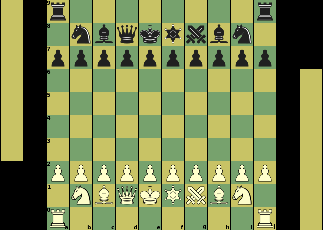

Sliding capture or non-capture,
can be blocked on any square along the ray


|

Captured pieces will be displayed beside the board for promotion choice |
Initial setupe1, e8: King |
Click on a piece below to see its moves
|
Sliding capture or non-capture, |
||||||||||
|
Unblockable leap (capture or non-capture) | ||||||||||
|
|
Non-capture only | |||||||||
|
Capture only | ||||||||||
|
|||||||||||
|
|
|
|
|
|
|
|||||
|
|||||||||||
:
:
:
:
| Piece | ID | value | Moves (Betza notation) | Remarks |
| King | K | - | K | |
| Queen | Q | 9.5 | RB or Q | |
| Chancellor | C | 9 | RN | |
| ArchBishop | A | 8.75 | BN | |
| Rook | R | 5 | R | |
| Bishop | B | 3.5 | B | Color-bound |
| Knight | N | 3 | N | |
| Pawn | P | 1 | mfWcfF | Promotes to any other piece that was captured |
When a Pawn can be promoted, XBoard first advances it as a Pawn to the promotion square. Then it waits for you to complete the move entry by clicking on the piece in the holdings beside the board that you want to promote to. To defer promotion you can click on a Pawn or on an empty square in the holdings of the promoting side.
The Chancellor and Archbishop pieces are extra, and the board is expanded to accomodate them. There is no castling. Promotion only allows you to regain back a piece that you lost before. The promotion zone is 3 ranks deep, and promotion is only mandatory on last rank.
It is not possible to force checkmate on a bare King with just a single Bishop or Knight (in addition to your own King). Two Knights cannot do that either. The Archbishop can force checkmate against a bare King.
Bishops are confined to squares of a single color. Having Bishops on both colors compensates this weakness, and is worth an extra 0.5 on top of their added value.
As Chancellor and Archbishop are nearly equal in value to Queen, under-promotion is very common.
The super-pieces (Q, C, A) devaluate by the presence of lower-valued opponent pieces. As a result trading Q for R + B is in not as bad when you still have A and C, as the latter gain in value by eliminating the opponent's R and B, which is more compensation than the intrinsic value difference between Q and R + B.